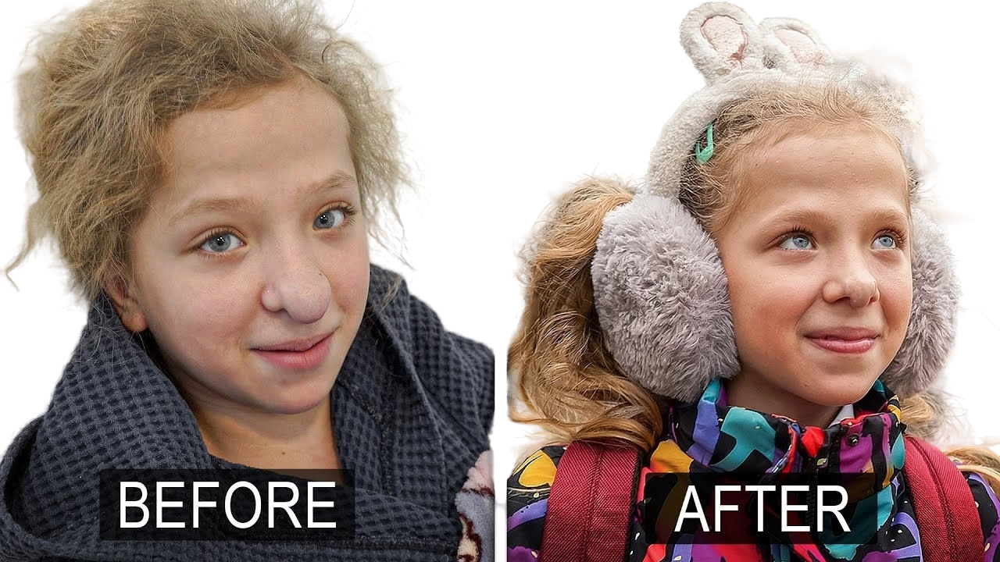
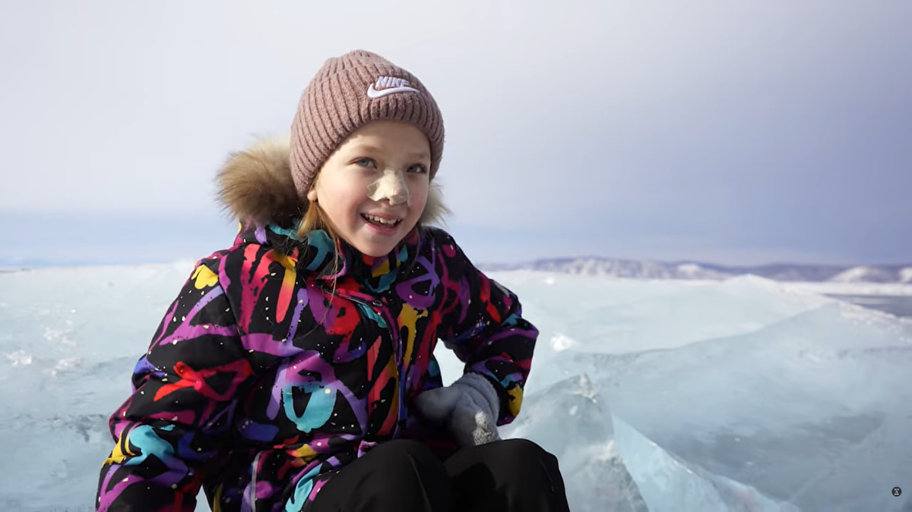
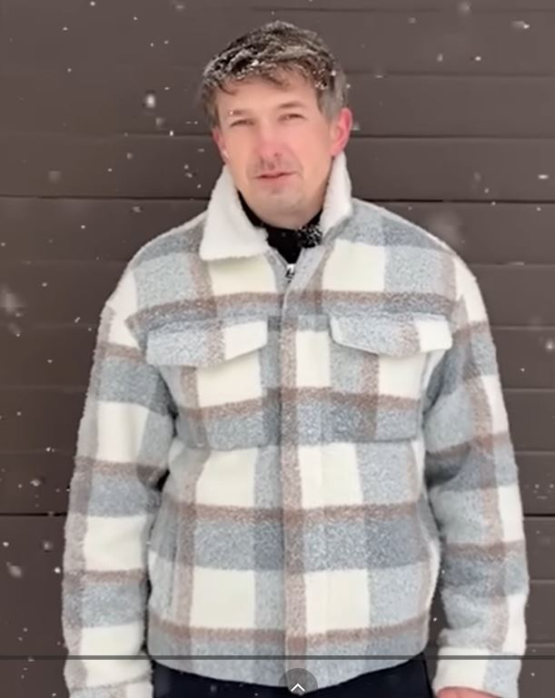
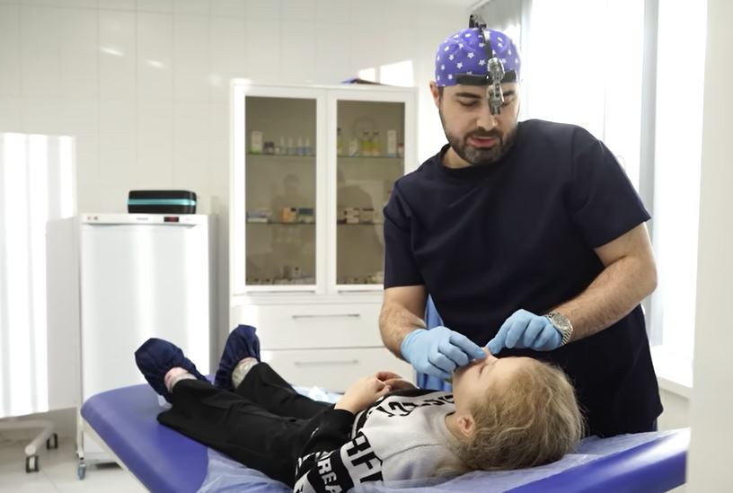
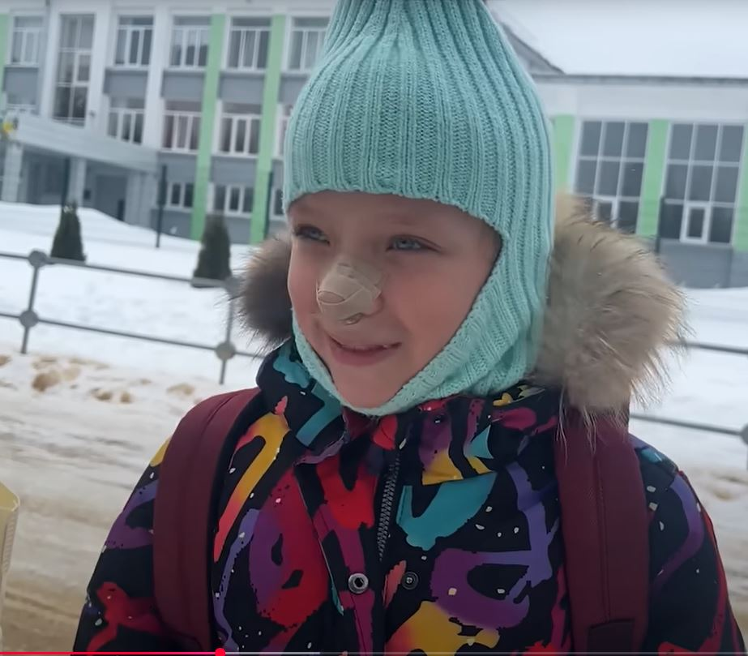
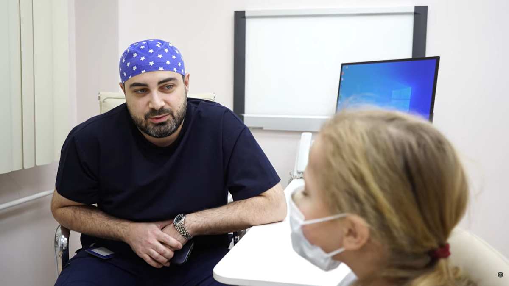

The Problem

Audio 1–3
This is a story about a girl, her nose, and thousands of strangers who became her family.






Varya Before The Operation
Two provided audio tracks
The supplied recordings are kept intact; they are not artificially split.
8 questions
4 questions
3 questions
Match the phrasal verb with its meaning from the story.
Technology can change a life. But kindness cuts much deeper than a knife.
Your Mission: Listen to the song Her New Nose. Then create a short response (written, drawn, or recorded) answering:
“When has kindness changed something for you or someone you know?”
Format options: short paragraph · drawing/comic · 1-minute audio · letter.
Technology gave us the tools. Human kindness turned a sad story into a happy one.
When has kindness changed something for you or someone you know?
Kindness cuts deeper than a knife.
turn to · turn into · turn around · turn away · turn up
Meanings: ask for help · become · change direction/change for the better · ignore/refuse to look · appear/arrive.
a) turn to: ____________________
b) turn into: ____________________
c) turn around: ____________________
d) turn away: ____________________
e) turn up: ____________________
a) When Varya had problems, she ______ her mother for support.
b) Sergey could have ______, but he decided to help.
c) The story ______ my whole day ______.
d) Thousands of people ______ to donate money.
e) Her dream ______ reality thanks to strangers.
a) “She had to be put on a ventilator.” — Modal + Passive Infinitive
b) “The operation was too risky.” — Not passive
c) “Money was raised.” — Tense: ______
d) “Her nose had to be reconstructed.” — Modal + Passive Infinitive
e) “The bandages were going to be removed.” — Future in the past passive
f) “Varya was given a mirror.” — Tense: ______ (Double object passive)
a) Someone put Varya on a ventilator.
→ Varya ______ ______ on a ventilator.
b) The doctors reconstructed her nose layer by layer.
→ Her nose ______ ______ layer by layer.
c) A nurse gently unwrapped the bandages.
→ The bandages ______ ______ gently by a nurse.
d) Thousands of strangers donated money.
→ Money ______ ______ by thousands of strangers.
a) The operation ______ (perform) in a clinic in Irkutsk.
b) Varya ______ (keep) in the hospital for several weeks.
c) A mirror ______ (give) to her so she could see herself.
d) The video ______ (watch) by millions of people.
HER NEW NOSE
She was born a little early
A machine helped her to breathe
But something broke inside her nose
A change that no one could believe
They called her names at school each day
"Baba Yaga," cruel and cold
She stopped looking in the mirror
A story that was bought and sold
No one saw the girl inside
No one stopped to turn the tide
But then a stranger saw her face
He didn't look the other way
He told the world: "Let's help this child"
And someone listened, someone smiled
The knife was held by gentle hands
The surgery was carefully planned
Technology can change a life
But kindness cuts much deeper than a knife
In Irkutsk, the doctors waited
They gave their time, they asked no fee
A new nose, a new beginning
A chance for Varya to be free
They didn't ask for fame or praise
They just believed in better days
But then a stranger saw her face
He didn't look the other way
He told the world: "Let's help this child"
And someone listened, someone smiled
The knife was held by gentle hands
The surgery was carefully planned
Technology can change a life
But kindness cuts much deeper than a knife
And then she walked on Baikal's ice
The frozen lake so deep and wide
She saw herself in crystal blue
A girl who made it through
The tears that fell were not from pain
They washed away the hurt and shame
"I can look at myself now,"
She whispered to the sky somehow
[Chorus - full band, triumphant, uplifting]
Then a stranger saw her face
He didn't look the other way
He told the world: "Let's help this child"
And someone listened, someone smiled
The knife was held by gentle hands
The surgery was carefully planned
Technology can change a life
But kindness cuts much deeper than a knife
Now she smiles without hiding
Now she walks without fear
And everyone who helped her
Showed that kindness is the frontier
"I can look at myself now."
«Её новый нос»
Она родилась раньше срока
Аппарат помогал ей дышать
Но что-то сломалось внутри её носа
Перемена, в которую никто не мог поверить
В школе её обзывали каждый день
«Баба-Яга» — жестоко и холодно
Она перестала смотреть в зеркало
История, которую продавали и покупали
Никто не видел девочку внутри
Никто не остановился, чтобы повернуть течение
Но потом незнакомец увидел её лицо
Он не отвернулся
Он сказал миру: «Давайте поможем этому ребёнку»
И кто-то услышал, кто-то улыбнулся
Скальпель держали нежные руки
Операция была тщательно спланирована
Технологии могут изменить жизнь
Но доброта режет гораздо глубже ножа
В Иркутске врачи ждали
Они отдали своё время, они не взяли платы
Новый нос, новое начало
Шанс для Вари быть свободной
Они не просили славы или похвалы
Они просто верили в лучшие дни
Но потом незнакомец увидел её лицо
Он не отвернулся
Он сказал миру: «Давайте поможем этому ребёнку»
И кто-то услышал, кто-то улыбнулся
Скальпель держали нежные руки
Операция была тщательно спланирована
Технологии могут изменить жизнь
Но доброта режет гораздо глубже ножа
А потом она вышла на байкальский лёд
Замёрзшее озеро, такое глубокое и широкое
Она увидела себя в кристально-голубом
Девочка, которая выжила
Слёзы, которые упали, были не от боли
Они смыли боль и стыд
«Теперь я могу смотреть на себя», —
Прошептала она небу
Потом незнакомец увидел её лицо
Он не отвернулся
Он сказал миру: «Давайте поможем этому ребёнку»
И кто-то услышал, кто-то улыбнулся
Скальпель держали нежные руки
Операция была тщательно спланирована
Технологии могут изменить жизнь
Но доброта режет гораздо глубже ножа
Теперь она улыбается, не прячась
Теперь она идёт без страха
И все, кто ей помогли
Показали, что доброта — это граница, которую стоит пересечь
«Теперь я могу смотреть на себя».
Your Mission: Listen to the song Her New Nose. Then create a short response (written, drawn, or recorded) answering:
“When has kindness changed something for you or someone you know?”
Final sentence to include: “Kindness cuts deeper than a knife.”
Choose one: a short paragraph, a 4-panel comic, a 1-minute audio recording, or a letter. Use the space below to plan your response.